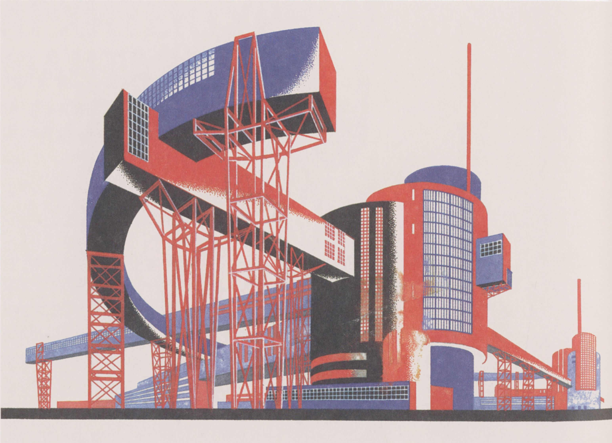
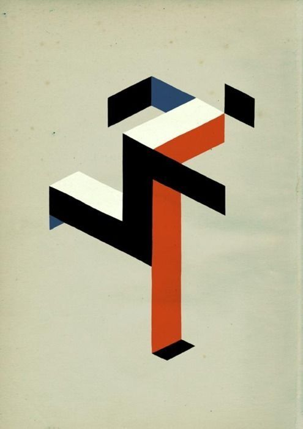

CONSTRUCTIVISMO
El constructivismo es una corriente de pensamiento que afirma que el conocimiento se construye activamente por el individuo, en lugar de ser recibido de forma pasiva.
Manifiesto
“El arte no debe ser contemplación, sino construcción.”
“La forma sigue a la función: la estética está al servicio de lo útil.”
“El artista se convierte en ingeniero: crea estructuras para la vida cotidiana.”
“El espacio, la línea y el color son materiales de construcción social.”
“El arte para el arte muere; el arte para la vida nace.”


“Geometría, ritmo y orden: herramientas para un nuevo mundo.”
“El objeto artístico se transforma en objeto productivo.”
“El arte ya no representa, organiza la realidad.”
“Cada superficie, cada volumen, debe servir al colectivo.”
“El futuro se diseña con planos, acero y movimiento.”